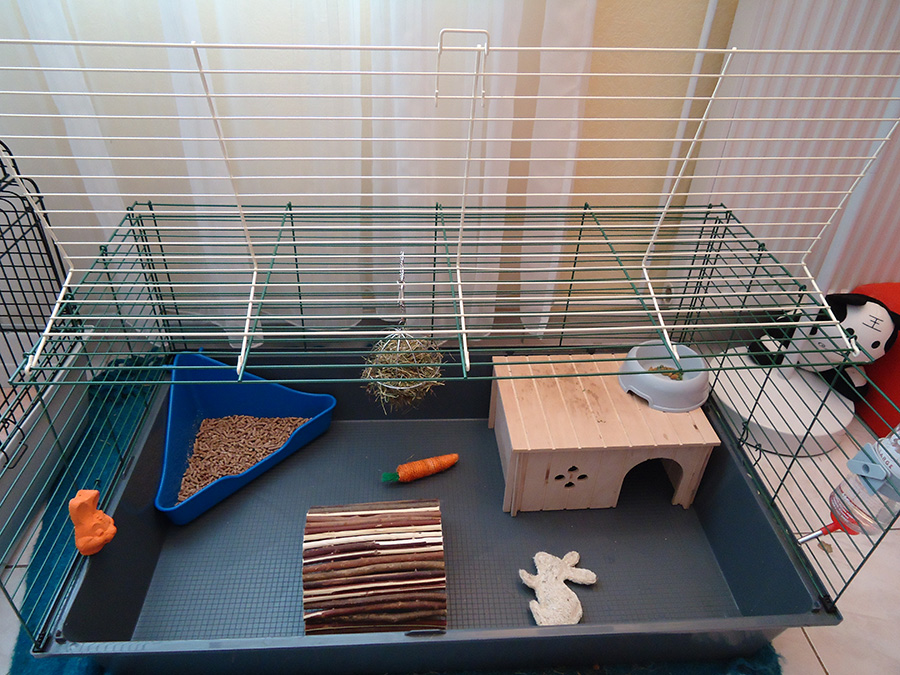

Préparer l'arrivée de mon lapin
Lors de son arrivée à la maison, il est essentiel de permettre à votre lapin de s’habituer en douceur à son nouvel environnement. Vous aurez prévu à l’avance tous les éléments indispensables à son confort: gamelles, toilettes, jouets, coin-cachette pour dormir... Mais dans tous les cas, douceur, calme et patience sont de rigueur.
Avant toute chaose, il faut comprendre que dans la nature, le lapin est une proie. Il vit de manière discrète, s’enfuit à la moindre menace et passe du temps caché dans son terrier.Il ne faut donc pas s’étonner qu’il soit effrayé lorsqu’il est déposé sur le sol carrelé d’une pièce “vide”, entouré d’enfants joyeux! Si, dans ce cas, on tente de le saisir, il est possible qu’il cherche à s’échapper et griffe les mains qui le retiennent... Pas d’inquiétude: votre petit sauvageon doit apprendre à vous connaître. Pour cela, il est essentiel de le laisser se cacher pour se rassurer.
Laissez-lui du temps. Respectez sa timidité. Tant qu’il reste caché, il doit pouvoir avoir accès à l’eau, à sa nourriture et à ses toilettes. Au fils des jours, il apprendra à vous connaître, à reconnaître les buits de la maison. C’est là qu’il va progressivement commencer à découvrir son territoire. Comme il le ferait dans la nature, il va se promener, de plus en plus longuement, pour repérer les cachettes où se réfugier, les zones où se trouvent des aliments, les endroits amusants... Laissez-le évoluer librement (en sécurité), et permettez-lui de découvrir la maison et la famille, sans tenter de l’attraper.
Lors des premiers contacts, soyez très calme. Laissez-le s’apporcher de vous sans bouger. S’il vient vous renifler, vous pouvez lui parler doucement, mais dans tous les cas, il doit pouvoir s’enfuir comme bon lui semble, car aucun lien de confiance ne peut se construire sous la contrainte.
Progressivement, il va faire connaissance avec son nouvel environnement et gagner en confiance. Certains membres de la famille sauront plus facilement l’apprivoiser, mais tout est affaire de patience et de douceur. Au fil des semaines, il reconnaîtra les voix, appréciera les caresses, et découvrira la hiérarchie du foyer.
